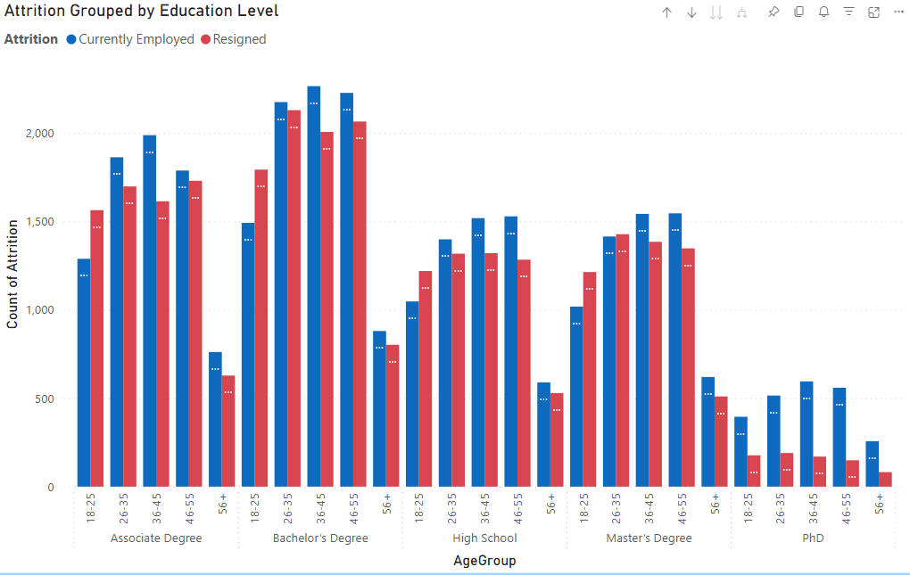
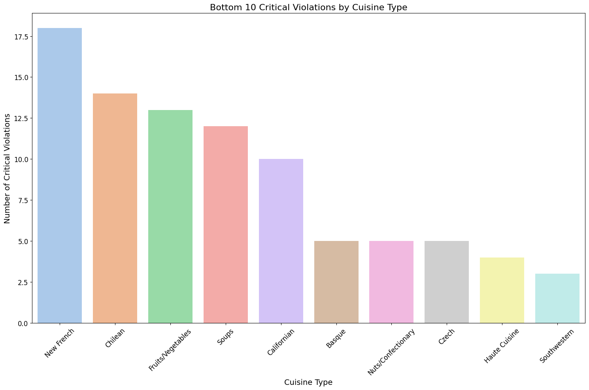
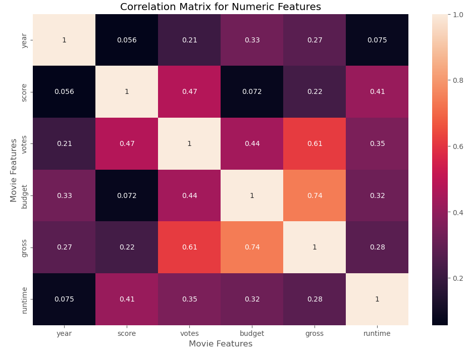
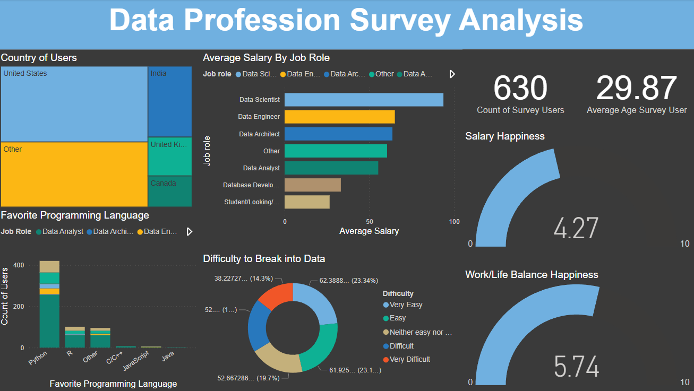
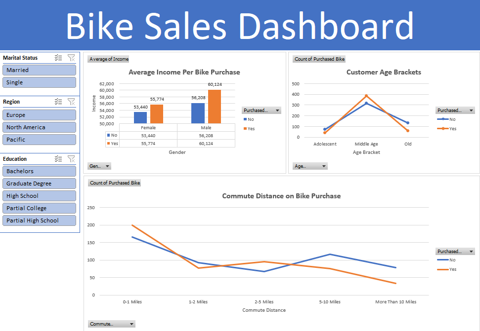

This personal project dives into the world of cybersecurity by analyzing network intrusion data using SQL. The goal was to clean, explore, and uncover patterns that help identify potential security threats.
This work showcases my SQL skills and analytical thinking in a practical, real-world scenario.

This personal project analyzes a dataset of movie critic reviews to uncover insights into sentiment trends, influential critics, and publication behavior. By leveraging Python for data processing, MySQL for querying, and Power BI for visualization, the project delivers actionable
insights into how movies are reviewed across time and by different critics and publications.

This academic project analyzes employee attrition patterns to identify key drivers behind workforce turnover. By leveraging Scikit-Learn for predictive modeling (Random Forest, Logistic Regression) and Power BI for data visualization, the project achieves 80% accuracy in forecasting attrition. Interactive dashboards highlight crucial factors such as job levels and remote work preferences, providing actionable insights to improve employee retention strategies.

This academic project analyzes 200,000 NYC restaurant inspection records to uncover key compliance factors affecting health code adherence. Using Python for data processing and Matplotlib for visualization, the analysis identifies violation trends and risk patterns. Insights from this project are projected to improve health code adherence by 15%, aiding in the development of targeted health campaigns.

This personal project analyzes the correlation between various factors in a dataset of movies. The goal is to identify relationships between features such as box office revenue, budget, runtime, ratings, and other numerical attributes. The analysis is conducted
using Pandas, NumPy, and Matplotlib/Seaborn for data visualization.

This personal project analyzes survey responses from 630 data professionals to uncover key insights about salaries, job roles, work-life balance, and industry trends. Using Power BI, I visualized the average salaries by job role, the most popular programming languages, and the perceived difficulty of breaking into the data field.
The dashboard provides a comprehensive view of industry satisfaction, highlighting trends that can help aspiring data professionals make informed career decisions.

This personal project analyzes bike purchase trends based on customer demographics, income levels, commute distances, and regional factors. Using Excel, I created an interactive dashboard that provides insights into the purchasing behavior of different customer segments.